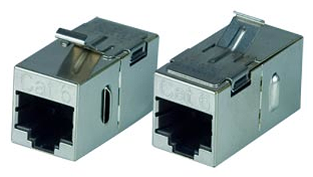
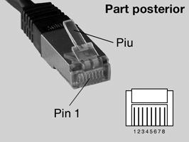
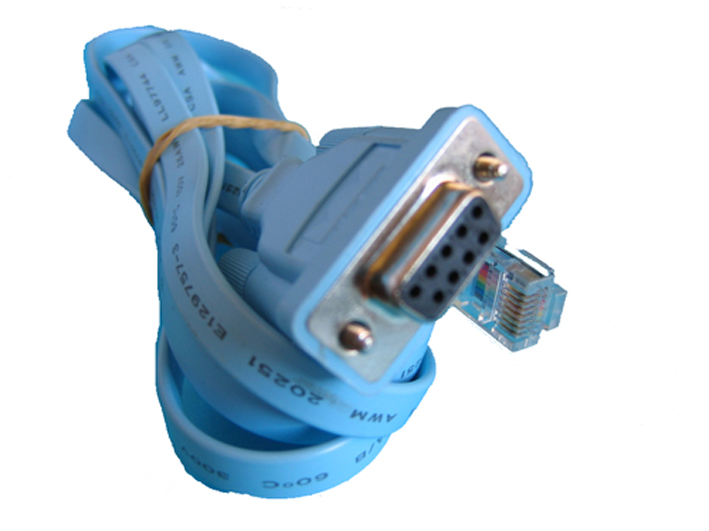
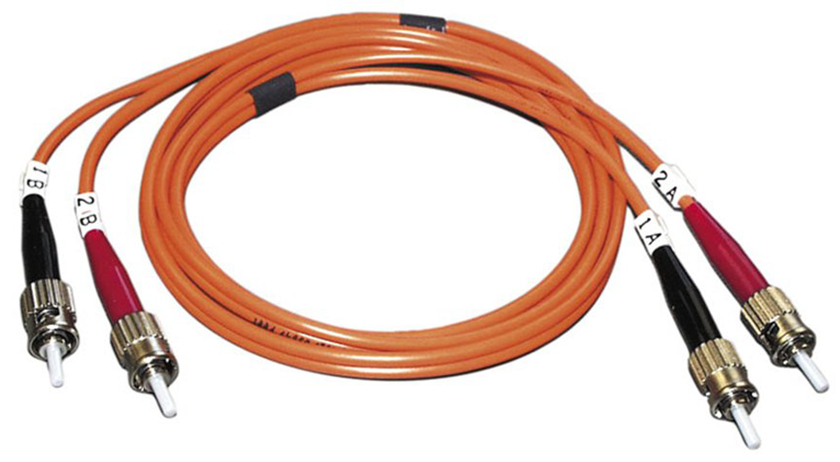
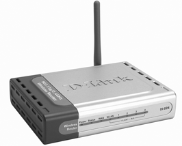

Medis físics de transmissió
El propòsit de la capa física és dur un flux de dades d’un terminal (ordinador, host) a un altre. Per dur a terme aquesta tasca s’usen diferents tipus de medis físics, conèixer els medis és l’objectiu d’aquest punt.
Heu de tenir en compte que els medis de transmissió són la part, segurament, més duradora del disseny d’una xarxa, abans canviareu els terminals o algun dispositiu d’interconnexió (encaminadors o commutadors) que els medis de transmissió, i això fa que la tria del medi de transmissió sigui força important a l’hora de dissenyar una xarxa. No obstant això, també heu de preveure el fet que és un camp molt dinàmic en el qual contínuament sorgeixen nous productes i sistemes de transmissió. Fixeu-vos en el vostre entorn: fa uns anys tots els ordinadors amb accés a Internet tenien connexió per cable fins a l’encaminador (router) i ara aquest cable, majoritàriament, ha desaparegut i la majoria de xarxes domèstiques s’han convertit en xarxes sense fil.
A continuació veureu els medis de transmissió que s’usen actualment, i en coneixerem les especificacions. Aquestes especificacions faran que el medi funcioni de la manera prevista i es pugui comunicar correctament amb la capa d’enllaç. En les especificacions principals de cada medi de transmissió cal conèixer:
- Especificació tècnica (tipus de cablatge, de connectors, com transmet la informació, etc.)
- L’amplada de banda
- Retard
- Cost
- Facilitat d’instal·lació
- Manteniment
A part d’estudiar com és el medi que comunica els dispositius d’una xarxa, també heu de saber que una de les tasques importants de la capa física és com transmet les dades pel medi de comunicació. Aquesta capa rep de la capa d’enllaç una trama amb les dades per transmetre, codificades en un conjunt de bits; per tant, la capa física ha de convertir aquests bits perquè puguin ser transmesos pel medi físic. Per tant, serà responsabilitat de la capa física convertir els bits al senyal que correspon al medi físic usat, i ha de convertir els bits a un senyal òptic, elèctric o de microones.
Aquest procediment explicat pertoca a l’emissor però també la capa física es responsabilitzarà de fer el procediment a la inversa en el cas del receptor, convertir el senyal analògic (òptic, elèctric o de microones) a digital (bits), ja que ha de passar la trama en format digital cap a la capa d’enllaç.
El terme senyal de transmissió de dades fa referència a una informació que es trasllada per un medi de transmissió transformat en un senyal conformat per polsos elèctrics, lluminosos o electromagnètics o en forma de modulacions, sobre senyals elèctrics, lluminosos o electromagnètics.
Tipus de senyals
Hi ha diferents tipus de senyals que representen informació, els senyals digitals i els senyals analògics.
Modulació
La modulació és una tècnica de transport de dades que consisteix a afegir la informació per transmetre a un senyal anomenat portador, de naturalesa elèctrica, lluminosa o electromagnètica, de tal manera que després pugui ser recuperada.
Un senyal digital és aquell en què les magnituds es representen mitjançant valors discrets en lloc de variables contínues.
Un valor discret és aquell que es pot representar per un conjunt de valors de dos estats, per exemple, l’interruptor de la llum només pot prendre dos valors o estats: obert o tancat, o el mateix llum: encès o apagat. Un senyal digital es transmet habitualment com un senyal per polsos.
Un senyal analògic és qualsevol senyal continu en temps i amplitud, les variacions dels valors del senyal són les variacions de la informació del senyal. Un senyal analògic es transmet habitualment en forma de modulació.
Fins fa poc temps, les transmissions de ràdio, televisió i telèfon s’envia ven per l’aire o els cables utilitzant ones electromagnètiques. Aquestes ones s’anomenen analògiques perquè tenen la mateixa forma que les ones de llum i so produïdes pels transmissors, de la mateixa manera que canvia la llum o el so, el senyal elèctric que transporta la transmissió també canvia proporcionalment. És a dir, els senyals electromagnètics són anàlegs a les variacions de llum o de so que representen.
Propietats fonamentals dels medis de transmissió
I un dels factors que caracteritzarà la transmissió serà la velocitat en què serà duta a terme pel medi físic que uneix l’emissor i el receptor. Aquesta velocitat estarà determinada per la capacitat que té el medi de transportar aquest senyal.
L’amplada de banda és la quantitat de dades que es poden transmetre per un medi en una quantitat de temps determinada.
Aquesta amplada de banda fixa la capacitat del medi de transmetre les dades. És la velocitat màxima a la qual podríeu transmetre dades en un medi concret, donada una situació ideal. Però en una transmissió influeixen diferents elements, com són:
- Els dispositius d’interconnexió (tenir en compte els dispositius pels quals passa la transmissió i les amplades de banda corresponents).
- La mida de les dades per transmetre (és més gran que la capacitat que té el medi per transmetre).
- La topologia de la xarxa (el disseny de la xarxa afecta les distàncies per recórrer en la transmissió. També el camí per seguir durant una transmissió, el nombre divers de dispositius pels quals es passa).
- La congestió (s’està transmetent molta informació en el medi i això no el permet aprofitar al màxim per a la vostra transmissió).
- La distància que ha de recórrer el senyal (segons el medi de transmissió el senyal s’atenua a mesura que recorreu més distància).
La taxa de transferència és la velocitat real a la qual es transmeten els bits per un medi físic. És l’amplada de banda real.
Unitats de la taxa de transferència
La taxa de transferència es quantifica usant les unitats següents:
- bits per segon (bit/s o bps)
- bytes per segon (byte/s o Bps)
- quilobits per segon (kbit/s o kbps)
- megabits per segon (Mbit/s o Mbps)
- gigabit per segon (Gbit/s o Gbps)
L’equivalència entre les unitats és diferent que en les usades per quantificar les mides de dades. En aquest cas l’equivalència és:
1 kbps = bps,
a diferència de:
1 kbit = bits.
Podríem fer el símil que l’amplada de banda són els carrils d’una autopista, i les dades els vehicles que hi passen. Si useu aquesta autopista vosaltres sols podreu anar al màxim de velocitat permesa, fins i tot podríeu continuar anant a aquesta velocitat màxima fins que s’acabessin omplint tots els carrils. Però si el nombre de vehicles supera el nombre de carrils, ja no teniu suficients carrils per a tots els vehicles, i aleshores ja no us permetria desplaçar-vos a la velocitat màxima.
Aquesta situació en les xarxes d’ordinadors es donaria quan hi ha un alt volum de dades o un alt nombre d’usuaris. També us podeu trobar que de cop l’autopista passa a un tram amb menys carrils, i provoca una disminució de la vostra velocitat. En les xarxes d’ordinadors correspon al cas de passar per un dispositiu d’interconnexió amb menys amplada de banda. Fins i tot us podríeu trobar en el cas que us heu d’aturar en un peatge. En les xarxes correspondria al cas d’una congestió.
Una altra situació comparable és el sistema de canonades d’un edifici, el diàmetre de la canonada seria l’amplada de banda, i l’aigua que transporta, les dades. Per tant, el diàmetre us marca la capacitat màxima d’aigua que té la canonada i a la vegada us fixa el cabal màxim. Us podríeu trobar que la canonada que us ha posat la companyia d’aigües, que us porta l’aigua del carrer, sigui de 20 centímetres de diàmetre. Però un cop dins del vostre edifici sigui de 10 centímetres de diàmetre i dins de casa vostra sigui de nou de 20 centímetres de diàmetre. Aquesta situació us provoca que la vostra canonada no estigui aprofitada al 100% de la seva capacitat, perquè passa per una canonada intermèdia de menys capacitat.
La mateixa situació traduïda a les xarxes seria en una transmissió en què en el camí de l’emissor al receptor s’interposa un dispositiu amb menys amplada de banda que els de l’origen i destinació. En aquest escenari la canonada intermèdia s’anomena coll d’ampolla (bandwidth bottle neck), ja que us limita el cabal màxim. En les xarxes aquest dispositiu intermedi us limita tota l’amplada de banda de la vostra xarxa.
Medis físics
Una vegada la capa física crea els senyals que permeten la transmissió de la informació, cal un medi físic perquè els senyals es desplacin des de l’emissor fins al receptor. Aquest medi físic pot ser de diferent naturalesa, i la xarxa resultant es classificarà d’acord amb aquesta.
Els materials a través dels quals flueix el corrent presenten diferents graus d’oposició –o resistència– al moviment dels electrons. El grau de resistència depèn de la composició química dels materials: aquells que presenten molt poca o cap resistència s’anomenen conductors, mentre que aquells que no deixen que el corrent flueixi o el restringeix s’anomenen aïllants. Amb la lletra R representeu la resistència. La unitat que mesura la resistència és l’ohm (Ω).
Els tipus principals de medis físics són:
- El cablatge de coure.
- El cablatge de fibra òptica.
- Comunicacions sense fils, és a dir, la mateixa atmosfera usada en transmissions, mitjançant radiofreqüències, satèl·lits, etc.
A la figura podeu veure el significat de cada part del nom del cable.
Backbone (Troncal de la xarxa)
El troncal és la part del cablatge que actua com a ruta principal per al trànsit de la xarxa o l’encamina a altres xarxes.
Generalment, en les xarxes LAN (Local Area Network, xarxes d’àrea local), s’usa cablatge de coure, en les seves diferents modalitats, per a la unió d’elements de xarxa, i es reserva l’ús de cablatge de fibra òptica per a la unió de nodes principals (backbone).
Cablatge de coure
El cablatge de coure és el medi més comú d’unió entre dispositius en xarxes locals. S’usen dos tipus de cables: el cable coaxial i el cable de parells trenats. Dins d’aquests dos tipus, teniu la classificació següent:
Especificacions de cable
Els cables tenen diferents especificacions relacionades amb el tipus de cable. En les xarxes Ethernet tenim:
- 10 BASE-T
- 10 BASE5
- 10 BASE2
- Cable coaxial
- Cable de parells trenats:
- STP
- ScTP
- UTP
Cable coaxial
El cable coaxial conté un conductor central (conductor de coure) situat coaxialment dins un cilindre exterior de naturalesa igualment conductora, amb una malla trenada (blindatge de coure trenat). Els dos conductors estan separats per un material dielèctric –cos no conductor– (l’aïllament de plàstic), i el conductor exterior està cobert també per una funda de plàstic (el revestiment exterior). El cable coaxial s’ha de manipular amb compte, ja que per un cop o un plegament excessiu pot produir una deformació en el blindatge del cable que redueixi l’abast del cable. Podeu veure un esquema d’un cable coaxial a la figura.
Aquesta disposició coaxial dels dos conductors aconsegueix una immunitat molt superior a les interferències electromagnètiques i diafonia que la que té el parell trenat. Això permet usar-lo per a grans distàncies i capacitats.
El cable coaxial es va desenvolupar inicialment per a les xarxes troncals de telefonia analògica, en les quals un únic cable podia transmetre fins a 10.000 circuits simultanis de veu. Als anys setanta es comencen a desenvolupar sistemes de transmissió telefònica digital amb aquest tipus de cable. No obstant això, actualment aquest ús dels cables coaxials s’ha frenat a causa de la substitució per cables de fibra òptica, de cost inferior i amplada de banda superior.
Actualment s’utilitza per a senyals de televisió (per cable, via satèl·lit o antena), per a connexió de centrals telefòniques, la connexió d’automatismes industrials i en xarxes d’àrea local.
Algunes de les característiques generals del cable coaxial són:
- Velocitat i taxa de transferència 10-100 Mbps.
- El seu cost és econòmic.
- La mida dels medis i dels connectors és mitjana.
- La longitud màxima del cable és de 500 metres.
Per a les LAN, el cable coaxial ofereix diversos avantatges: es poden realitzar esteses entre nodes de xarxa a distàncies més grans que amb altres tipus de cables (uns 500 metres), sense que calgui utilitzar tants repetidors; és més econòmic que el cable de fibra òptica; i la tecnologia és summament coneguda. Malgrat que s’ha usat durant molts anys per a tota mena de comunicacions de dades, avui en dia ha deixat pas a la fibra òptica.
Impedància
L’electrònica defineix la impedància com la quantitat total d’oposició al flux del corrent elèctric. La impedància de 50 Ohms d’un cable coaxial influeix en la velocitat amb què poden viatjar els paquets a través del material conductor en condicions òptimes.
Hi ha diversos tipus de cable coaxial segons el seu diàmetre, que oscil·la entre 5 i 25 mm. Veieu a continuació tres d’aquests tipus:
- RG-62: cable utilitzat en les xarxes del tipus ARCnet (attached resource computer network, arquitectura de xarxa d’àrea local que utilitza una tècnica d’accés de pas de testimoni com el token ring), que té una impedància de 93 ohms. Per a la connexió física, com a elements d’unió s’utilitzen els connectors BNC mascles, axials, en T i terminals de càrrega encarregats d’impedir el rebot dels senyals de 93 ohms.
- 10Base2: cable utilitzat en xarxes petites amb estructura en bus. És un tipus de cable coaxial molt semblant al d’antena de televisió, també anomenat RG-58. Per establir les connexions amb les targetes de xarxa i ampliar els segments de xarxa de cable, també s’utilitzen connectors del tipus BNC mascles, axials, en T (vegeu la figura) i terminals de càrrega encarregats d’impedir el rebot dels senyals, en aquest cas de 50 ohms. Recordeu que en la denominació el 10 indica la velocitat màxima de transmissió del cable (10 Mbitps); el mot Base, que la transmissió es fa en banda de base (tècnica pròpia d’instal·lacions de distància curta, en què la informació s’envia en format digital i en què només un únic equip pot utilitzar el medi de transmissió); i el 2, que el segment de cable més llarg pot tenir 2 × 100 metres (200 metres), fins a un màxim de 5 segments de cable amb elements repetidors del senyal. Aquest cable també és conegut com a cable coaxial prim.
- 10Base5: cable coaxial més gruixut i molt rígid, que s’anomena també cable coaxial gruixut o RG-8 i RG-11. Paral·lelament al cable esmentat abans, té una velocitat màxima de 10 Mbitps i el nombre 5 indica que el cable més llarg pot tenir 5 × 100 metres (500 metres), fins a un màxim de 5 segments. La impedància del cable és de 50 ohms i els segments de cable necessiten un terminal de càrrega de 50 ohms als extrems. Aquest tipus de connexió necessita l’ús de transceptors per connectar la targeta NIC amb el cable, connectors de sèrie N que s’usen per interconnectar els segments de xarxa. Per fer-ho cal un connector axial i dos connectors mascles d’aquesta sèrie i terminals de sèrie N que s’usen per tancar els elements troncals de la xarxa. El cable coaxial gruixut és difícil d’instal·lar i poc manipulable en comparació del cable coaxial prim. En el disseny original de les xarxes Ethernet s’usava aquest cable com a medi compartit, com a backbone de la xarxa, i es tria pels avantatges comentats i pel seu cost acceptable.
El cable coaxial està marcat amb les característiques tècniques del cable cada 2,5 metres: per tant, si els dispositius es connecten a una distància més petita que la indicada es poden produir errors. La impedància d’aquest cable és de 50 Ohms, per la qual cosa els segments del cable han de tenir una càrrega de 50 Ohms als extrems.
Actualment s’ha de tenir en compte que en el disseny de xarxes locals no s’acostuma a usar aquest cable, tot i que podeu trobar encara l’ús del cable coaxial de banda ampla, que té 75 ohms d’impedància, que no és ni més ni menys que el cable coaxial d’antena de televisió. Es fa servir en comunicacions telefòniques com a nivell intermedi entre el cable de parell trenat i la fibra òptica. En xarxes locals es fa servir en alguns casos quan es vol tenir gran capacitat sense recórrer a la fibra òptica. Generalment s’usa per a la televisió per cable.
Cable de parells trenats
Podeu trobar diferents models de cable de parells de fils trenats en el mercat. Els connectors s’anomenen RJ-45. Va ser aprovat per l’IEEE el 1990 per interconnectar ordinadors, i avui és el medi de transmissió més emprat.
L’estructura d’un cable de parell trenat és la d’un cable de comunicacions flexible, que conté parells de fils de coure aïllats per un embolcall plàstic i enrotllats entre ells per evitar les interferències electromagnètiques i recoberts per un plàstic aïllant.
Els models comercials més utilitzats i normalitzats són:
- STP (shielded twisted pair, parell trenat apantallat)
- ScTP (screened twisted pair, parell trenat amb pantalla global)
STP
Com es mostra a la figura, el cable STP està format per una capa exterior plàstica aïllant (embolcall) que recobreix una malla metàl·lica. Aquesta malla (blindatge trenat) recobreix les capes interiors de paper metàl·lic, dins de les quals se situen normalment quatre parells de cables, trenats per parells, amb revestiments plàstics de diferents colors per a la seva identificació. Combina les tècniques de blindatge, cancel·lació i trenat de cables. Segons les especificacions d’ús de les instal·lacions de xarxa Ethernet, el cable STP proporciona resistència contra la interferència electromagnètica i de la radiofreqüència sense augmentar significativament el pes o mida del cable. És un cable de 150 Ohms.
A diferència del cable coaxial, el blindatge en l’STP no forma part del circuit de dades i, per tant, el cable ha d’estar connectat al terra pels dos extrems.
Normalment, els instal·ladors connecten STP a terra, a l’armari, per al cablatge i el concentrador, encara que això no sempre és fàcil de fer, especialment si els instal·ladors intenten usar plafons de connexió antics que no es van dissenyar per a cable STP. Si la connexió al terra no està ben realitzada, l’STP es pot transformar en una font de problemes, ja que permet que el blindatge actuï com si fos una antena, absorbint els senyals elèctrics dels altres fils del cable i de les fonts de soroll elèctric que provenen de l’exterior del cable.
No és possible realitzar esteses de cable STP tan llargues com amb altres medis de networking (com, per exemple, cable coaxial) sense repetir el senyal: la longitud màxima de cable recomanada és d’uns 100 metres, i el seu rendiment sol ser de 10-100 Mbps.
ScTP
Com es mostra a la figura el cable ScTP consisteix bàsicament en cable UTP embolcallat en un blindatge de paper metàl·lic. També se l’anomena UTP apantallat o FTP (Foil Twisted Pair). És un cable de 100 Ohms. Al igual que el cable STP, ha d’estar connectat al terra pels dos extrems per tal d’evitar problemes de soroll, ja que el blindatge podria actuar com a antena i recollir senyals no volguts.
El blindatge evita que les ones electromagnètiques externes produeixin soroll als cables de dades i minimitza la irradiació de les ones electromagnètiques internes, que podrien fer soroll en altres dispositius.
UTP: Cable de parells trenats no blindats
El cable UTP (Unshielded Twisted Pair, cable parell trenat) tal i com podeu veure a la figura està format per quatre parells de fils, trenats per parells, i revestits d’un aïllant plàstic de colors per identificar-los. És el cable més emprat, pel seu baix cost i facilitat d’instal·lació. Es coneix com a 10 BASE-T.
El cable UTP categoria 5 té una velocitat de transmissió de 100 MGbs. Quan s’usa com a medi de networking, el cable UTP té quatre parells de fils de coure de calibre 22 o 24. L’UTP té una impedància de 100 Ohms. Quan s’instal·la el cable UTP amb un connector RJ, les fonts potencials de soroll de la xarxa es redueixen enormement i pràcticament es garanteix una connexió sòlida i de bona qualitat.
No obstant això, el cable de parells trenats no blindats UTP és més sensible al soroll elèctric i la interferència que altres tipus de medis de networking. A més, tot i que abans el cable UTP es considerava més lent per transmetre dades que altres tipus de cables, avui dia ja no és així. De fet, en l’actualitat, es considera que el cable UTP és el més ràpid entre els medis basats en coure. La distància màxima recomanada entre repetidors és de 100 m, i el seu rendiment és de 10-100 Mbps.
Connectors
Per connectar el cable UTP als diferents dispositius de xarxa, s’usen uns connectors especials, denominats RJ-45 (Registered jack - 45), molt semblants als connectors típics del cablatge telefònic domèstic.
- 
- RJ-45 femella
Aquest connector redueix el soroll, la reflexió i els problemes d’estabilitat mecànica i s’assembla a l’endoll telefònic, amb la diferència que té vuit conductors en lloc de quatre. Es considera un component de networking passiu, ja que només serveix de camí conductor entre els quatre parells de cable trenat de categoria 5 i les potes de l’endoll RJ-45. D’altra banda, s’entén com un component de la capa 1, més que no pas un dispositiu, atès que serveix només de camí conductor per a bits.
Els endolls o connectors RJ-45 s’insereixen en receptacles o jacks RJ-45. Els receptacles RJ-45 tenen vuit conductors, que s’ajusten als del connector RJ-45. A l’altre costat del receptacle RJ-45 hi ha un bloc d’inserció on els fils individuals se separen i s’introdueixen en ranures mitjançant una eina similar a una forquilla denominada eina de punció. Comunament se’ls anomena RJ-45 femella. Vegeu un exemple en la imatge. El mateix connector es pot instal·lar en superfície, o ficar en un armari de comunicacions com es mostra a la figura.
Per centralitzar els diferents connectors RJ-45, s’utilitzen uns dispositius especials, denominats taulers de connexió. A la figura es mostra un exemple de tauler de connexió.
Vénen proveïts de dotze, vint-i-quatre o quaranta-vuit ports i normalment estan muntats en un bastidor. Les parts davanteres són receptacles RJ-45 i les parts del darrere són blocs de punció que proporcionen connectivitat o camins conductors. En el mercat se’n poden trobar per peces soltes. L’instal·lador els haurà de muntar endoll per endoll i connectar-hi el cable; una vegada fet això, només cal connectar-hi el cable amb l’eina de punció.
Connexions amb cable UTP amb els connectors RJ-45
En les xarxes LAN Ethernet 10BASET (i superiors), normalment tots els cablatges horitzontals (com el que apareix a la figura) es realitzen mitjançant cable UTP i connectors RJ-45. Ara bé, depenent de l’ús concret que es donarà al cable d’unió, aquest pot adoptar diverses configuracions que definiran les connexions entre els diferents pius dels connectors RJ-45 inicial i final del cable.
Els fils, pins, del cable tenen diferents terminacions segons l’estàndard a usar. Aquests estàndards defineixen les posicions dels fils, segons els colors, i quina funció tenen cada posició. Un dels estàndards més usats és el 568b. Vegeu el significat dels fils segons el color i la posició ocupada a la taula.
| Fil (pin) | Significat | Color |
|---|---|---|
| 1 | transceptor de dades + | blanc-taronja |
| 2 | transceptor de dades - | taronja |
| 3 | rebre dades + | blanc-verd |
| 4 | dades bidireccionals + | blau |
| 5 | dades bidireccionals - | blanc-blau |
| 6 | rebre dades - | verd |
| 7 | dades bidireccionals + | blanc-marró |
| 8 | dades bidireccionals - | marró |
Els connectors no sempre es connecten de la mateixa manera al cable. Segons el que vulgueu connectar, tindreu diferents tipus de cables:
- Cable de connexió directa (straight through).
- Cable de connexió encreuada (cross-over).
- Cable de consola o transposat (roll-over).
- 
- Pins de l'RJ-45
A continuació veureu com s’ha de connectar el connector RJ-45 al fil per obtenir un tipus de cable o un altre.
Com que el que canvia són les posicions dels fils de colors, els esquemes i imatges estan fets tenint en compte que agafeu el connector RJ-45 per la part davantera verticalment i amb els pins a la part superior.
- Connexió directa (straight trought). Aquest tipus de connexió s’usa en cables que han de connectar un element (ordinador) a una xarxa Ethernet 10BASET. Generalment, un extrem del cable (terminal A) es connecta al receptacle de la targeta de xarxa de l’ordinador (host), mentre que l’altre extrem (terminal B) es connecta a un commutador, com es veu a la figura.
- Connexió encreuada (cross-over). S’utilitza per connectar dos elements directament dos ordinadors, dos commutadors o dos concentradors– i es considera part del cablatge vertical o backbone. El cable d’interconnexió encreuada significa que el segon i el tercer parell en un extrem del cable es troben invertits a l’extrem oposat, com es representa a la figura.
- 
- Cable de consola RJ-45 a DB9
- Connexió de consola (roll-over) transposada. El cable de consola s’utilitza per connectar una estació de treball o terminal no intel·ligent al port de consola de la part posterior de l’encaminador o del commutador amb la finalitat de poder configurar-lo. Aquest tipus de cable té els dos connectors RJ-45: normalment cal endollar un dels connectors a un adaptador de terminal RJ-45 –a DB9 o DB25–, el qual converteix el RJ-45 en un connector D femella de nou o vint-i-cinc pins que es pot connectar a un port sèrie COM de l’ordinador. En aquesta connexió tots els cables van invertits de posició, com si es reflectissin en un mirall, i el seu esquema és que apareix a la figura. De vegades també es pot necessitar un adaptador per convertir un terminal DB9 a DB25 o viceversa, com el que es mostra a la figura.
Fibra òptica
Els sistemes de transmissió per fibra òptica, que es van introduir en la comunicació en la dècada dels setanta, han estat una de les causes més importants per explicar l’alt desenvolupament que han assolit les comunicacions pels motius següents:
- una millora significativa en termes econòmics,
- una reducció dràstica de les dimensions del cablatge,
- una comunicació més segura,
- una acceleració de la capacitat de transmissió.
Teniu que un cable de fibra òptica és molt més fi que un parell trenat o coaxial i a causa de la seva alta capacitat un cable de fibra òptica pot substituir molts cables de coure. És més segura la comunicació perquè no capta interferències externes. Mentre que un cable coaxial típic necessita repetidors cada 2 km, el sistema òptic, tot al contrari, té una separació entre repetidors entorn de desenes o fins i tot centenars de quilòmetres. Tots aquests factors han ajudat a digitalitzar les línies de comunicació i fer aquest salt en la tecnologia de les comunicacions dels darrers anys.
Kevlar
És una fibra amb unes característiques adients per a l’ús en transmissions òptiques. Les principals característiques són:
- Suporta altes temperatures.
- Lleugera.
- Resistent, alta resistència al tall (5 vegades més que l’acer).
- Resistència a la corrosió química.
En aquesta transmissió el senyal usat és la llum, o sigui, enviareu les dades mitjançant llum. Com es veu a la figura el medi de transmissió està format pel següent:
- El nucli: un cilindre de cristall o plàstic molt fi, ja que el diàmetre pot arribar a ser de 8 micròmetres. Per aquí es transmet la informació mitjançant un feix de llum fluctuant.
- Revestiment: envolta el nucli d’una capa protectora que permet retenir la llum en el nucli (blindatge de plàstic). Aquest revestiment intern a vegades és reforçat normalment d’un material plàstic com el Kevlar, el propòsit del qual és donar més amortiment i protecció a les fràgils fibres de vidre, que tenen el diàmetre d’un cabell. Sempre que els codis requereixin que els cables de fibra òptica hagin d’estar sota terra, a vegades s’inclou un filferro d’acer inoxidable com a reforç.
- Revestiment exterior: protegeix la fibra, la fa més robusta i evita que es malmeti. Normalment formada per material plàstic, compleix amb els codis aplicables d’incendi i construcció.
Aquesta transmissió normalment és símplex, que només va en un sentit, i per aconseguir una comunicació dúplex, és a dir, completa, en els dos sentits, haureu d’instal·lar dues fibres, dos nuclis, una per a cada sentit.
El cable de fibra òptica pot conduir transmissions de llum modulades. Si es compara amb altres medis de xarxes, és més car; no obstant això, no és susceptible a la interferència electromagnètica i ofereix velocitats de dades més altes que qualsevol dels altres tipus. El cable de fibra òptica no transporta impulsos elèctrics –com fan els cables de coure–, sinó que transporta polsos de llum, originats per dispositius de díodes emissors de llum LED o per un làser.
Optoelectrònica
Tot i que la informació es transmet en forma de polsos lluminosos els xips de dins dels dispositius d’interconnexió (commutadors, encaminadors, etc.) continuen funcionant amb corrent elèctric, per la qual cosa els dispositius emissor i detector han de convertir la informació d’un format a l’altre; per aquest motiu s’utilitza de vegades la denominació optoelectrònica per referenciar aquests dispositius.
Les parts que guien la llum en una fibra òptica es denominen nucli i revestiment. El nucli és generalment un vidre d’alta puresa amb un alt índex de refracció. Quan el vidre del nucli està recobert per una capa de revestiment de vidre o de plàstic amb un índex de refracció a sota, la llum es captura al nucli de la fibra. Aquest procés es denomina reflexió interna total i permet que la fibra òptica actuï com un “tub de llum”, guiant la llum a través d’enormes distàncies, fins i tot quan ha de travessar colzes.
La longitud màxima de cable recomanada entre nodes és de 2.000 metres i el seu rendiment és alt. Actualment s’utilitza per al troncal (backbone) de la xarxa.
- 
- Connector de fibra òptica
Hi ha dos sistemes de transmissió de dades per fibra òptica: els que usen LEDs (Light-Emitting Diode, díode que emet llum) i els que usen díodes làser. El cable de fibra òptica té dos modes de transmissió: monomode i multimode.
Multimode i monomode
Els sistemes que usen LEDs la transmissió del pols de llum (equivalent a un bit) genera múltiples raigs de llum al viatjar per la fibra, doncs es tracta de llum normal.
Es diu que cada un d’aquests raigs es coneix com un mode i la fibra que s’utilitza per transmetre llum d’emissors LED (llum no coherent) s’anomena fibra multimode.
Pel contrari els díodes làser emeten llum coherent, generen un únic raig de llum, sense dispersió.
Aquest únic propaga a través de la fibra en un sol mode i per aquest motiu la fibra utilitzada per la llum làser s’anomena fibra monomode.
Les fibres monomode s’usen per a transmetre a grans velocitats i/o a grans distàncies.
Quan es transmet un pols per una fibra multimode els raigs es reflecteixen múltiples vegades abans d’arribar al seu destí, amb angles diversos (tots per sobre de l’angle límit, en cas contrari es perdrien) això fa que la distància recorreguda pels raigs que formen el pols no sigui exactament la mateixa per a tots ells; això produeix un eixamplament del pols rebut, conegut com dispersió, que limita la velocitat de transferència, doncs l’emissor no pot enviar els polsos amb la rapidesa que idealment podria. La dispersió és funció de dos factores: la freqüència (que normalment podeu considerar similar al cabal) i la longitud de la fibra, i es calcula com el producte de totes dues magnituds La dispersió explica perquè en distàncies grans s’usa sempre fibra monomode.
Podeu comprendre la diferència en la propagació de la llum normal i la llum làser comparant el feix de llum generat per una llanterna i el generat per un punter làser. Mentre en la llanterna el feix s’obre en forma conoïdal més o menys ample, en el punter làser l’obertura és pràcticament nul·la, és a dir el feix manté sempre la seva mateixa amplada independentment de la distància a la que es projecti la llum. Aquesta diferència és la que produeix múltiples feixos (o modes) en un cas i només un en l’altre.
Les fibres s’especifiquen indicant el diàmetre de la fibra interior o nucli i el de l’exterior o funda (la que actua de protecció); les fibres multimode típiques són de 50/125mm (nucli de 50 mm i funda de 125 mm) i 62,5/125mm; per fer-vos a la idea de com són de primes un cabell humà té un diàmetre de 80 a 100 mm. Les fibres monomode són de 9/125 mm, el nucli és molt més estret doncs el feix no es dispersa (de fet és del mateix ordre de magnitud que la longitud d’ona de la llum que transmet), veieu que la funda és de 125 mm como en una fibra multimode.
Atenuació
És la quantitat de senyal que es perd en viatjar pel medi de transmissió, des de l’origen fins al node de recepció.
L’atenuació en una fibra òptica es mesura en decibels.
La fibra òptica és un medi de transmissió extremadament eficient. Es produeix una atenuació de 2,5 dB en 10 Km, que vol dir que equival a reduir el senyal original aproximadament a la meitat de la seva potència. En comparació un cable UTP-5 té una atenuació de 17 dB en 100m, és a dir perd el 98% de la potència en un trajecte cent vegades menor. Podeu veure un resum de les característiques més importants dels diferents tipus de fibres a la figura.
Quan s’interconnecten equips mitjançant fibres òptiques multimode, si utilitzen llum normal (no làser) és possible esbrinar quin és el costat transmissor simplement mirant l’extrem d’ambdues fibres i veient quina d’elles emet llum. Això mai s’ha de fer quan l’emissor és làser (el cas de les fibres monomode) ja que la llum làser és perjudicial per la vista i a més al tractar-se d’una emissió infraroja en una banda molt estreta l’ull no aprecia cap llum i el mal pot ser major.
Normalment en xarxes locals, amb distàncies no superiors a 2 Km, s’utilitzen fibres multimode amb emissors LED no làser. Aquests equips són més econòmics que els làser, tenen una vida més llarga, són menys sensibles a canvis de temperatura i més segurs. A altes velocitats (per sobre de 400-600 Mb/s) és necessari utilitzar emissors làser, doncs els emissors de llum normal no poden reaccionar amb la rapidesa suficient.
En xarxes d’àrea extensa sempre s’utilitza fibra monomode i emissors làser. Actualment es pot arribar a distàncies de fins a 160km sense amplificadors intermediaris. El cost més gran dels emissors està més que justificat en aquest cas degut a la reducció en equips intermediaris (amplificadors i regeneradors del senyal).Les tecnologies de xarxa local arriben a velocitats de transferència fins a 1 Gb/s sobre fibra òptica (Gigabit Ethernet per exemple). En xarxes d’àrea extensa el major cost de la fibra estimula el seu millor aprofitament i s’arriba a velocitats de 2,5 i 10 Gb/s.
Comunicacions sense fils
Les ones elèctriques són transmeses per fils de coure, o per ones lluminoses en el cas de la fibra òptica, aquestes transmissions permeten dur a terme l’objectiu principal: transportar bits. Les ones elèctriques i lluminoses són ones electromagnètiques, i en aquest punt veureu com s’utilitzen per transmetre bits quan es propaguen per l’aire i no van guiades per un fil de coure o vidre.
Aquest tipus de transmissió té un gran interès actualment doncs permeten establir connexions amb un ordinador amb moviment i a més el mercat està farcit majoritàriament d’ordinadors o dispositius portàtils (per exemple cada cop hi ha més presència al mercat dels anomenats smartphones, telèfons intel·ligents que permeten connectar-se a una xarxa). També heu de tenir en compte aquelles situacions on no és possible l’ús del cable, per exemple: voleu connectar dos ordinadors i no voleu usar el cable sigui per rapidesa, provisionalitat, estètica o impossibilitat física.
Les tecnologies sense fils de comunicació de dades funcionen bé en entorns oberts. Però existeixen determinats materials de construcció utilitzats en edificis i estructures, a més del propi terreny, que limiten la cobertura efectiva. Les ones també són susceptible a la interferència i pot distorsionar-se per dispositius comuns com telèfons sense fils domèstics, alguns tipus de llum fluorescent, forn microones i altres comunicacions sense fils. Els dispositius i usuaris que no estan autoritzats a ingressar a la xarxa poden obtenir accés a la transmissió, doncs és fàcil accedir a una senyal sense fils. Per tant, la seguretat de la xarxa és un component principal de l’administració de les xarxes sense fils.
Les xarxes sense fils es basen en la transmissió d’ones electromagnètiques, que poden recórrer el buit de l’espai exterior i medis com l’aire, però no és necessari un medi físic, característica que fa que siguin un medi molt versàtil per al desenvolupament de xarxes.
L’aplicació més comuna de les comunicacions de dades sense fils correspon als usuaris mòbils: per exemple, és una solució per aquells que necessiten estar permanentment en xarxa, o per a aquells usuaris de zones geogràficament aïllades on instal·lar cable és econòmicament impossible.
Hi ha diversos medis de transmissió sense fils, capaços de transmetre paquets per la xarxa:
- Ones de ràdio.
- Infraroges.
- Microones.
Totes aquestes tecnologies transmeten els senyals per l’aire. Un exemple d’ús de les transmissió per aire es mostra a la figura. L’avantatge de la comunicació sense fil és que no necessita la instal·lació de cablatge, però també té una sèrie d’inconvenients: hi pot haver interferències amb altres senyals, que utilitzen el mateix medi de transmissió, i també es veuen afectades pel sol, canvis ionosfèrics i pertorbacions atmosfèriques. Les principals avantatges i les desavantatges de les transmissions sense fils estan reflectides en la taula.
| Ràdio | Infraroges | Microones | |
|---|---|---|---|
| Avantatges | Bona solució per a les comunicacions mòbils. | Senyals difícils d’interceptar. | Es poden enfocar. Poden establir comunicacions amb satèl·lits. |
| Desavantatges | Limitat per les interferències i els obstacles naturals. Hi ha tot tipus d’interferències: radioaficionats, comunicacions militars, i telefonia mòbil. No suporta grans velocitats. | No pot traspassar objectes físics. Altres fonts lluminoses provoquen interferències. No suporta grans velocitats. | Cost elevat d’instal·lació i manteniment. Té interferències provocades pel mal temps, condicions atmosfèriques i interferències electromagnètiques. No suporta grans velocitats. |
Per tant teniu que una comunicació sense fils consisteix en la tramesa i recepció d’electrons o fotons en forma d’ones electromagnètiques.
Ones de ràdio
Són ones fàcils de generar, capaces de cobrir llargues distàncies, travessen les parets sense dificultat, i a partir de l’emissor es propaguen a totes les direccions (depenen del tipus d’antena).
Les ones de ràdio tenen polarització, poden ser reflectides, refractades, crear interferència, etc. Cent anys després del seu descobriment, les ones de ràdio formen part essencial de la nostra societat.
Igual que podeu distingir diferents tipus de llum –els colors–, hi ha diferents tipus d’ones de ràdio. Les diferents classes d’ones de ràdio es caracteritzen per la seva freqüència, (com és representada a la figura) mesurada en hertzs. Aquest tipus de transmissió és més adequat per a transmissions directes que per a transmissions a grans distàncies, atès que les ones tenen una longitud molt curta i baixa penetració. Un senyal d’una sola freqüència i de baixa potència de 1 a 10 Watts pot transmetre de 1 a 10 Mbps.
Ones infraroges
Són ones per a distàncies curtes. Utilitzen aquest tipus d’ones els comandaments a distància de televisió o vídeo, i els ordinadors portàtils acostumen a portar un port de comunicacions infraroges. Poden emetre en una sola direcció o en totes direccions, utilitzant un díode LED per transmetre i un fotodíode per rebre.
La velocitat de transmissió de dades solament arriba fins a 16 Mbps en comunicacions unidireccionals, i fins a 1 Mbps en comunicacions omnidireccionals.
Aquestes ones no travessen cossos, cosa que es pot considerar una seguretat, i per a fer-les servir no és necessari tenir llicència.
Microones
Aquest tipus d’ones permeten fer transmissions terrestres i entre satèl·lits. Emeten en una freqüència entre 300 Mhz i 300 Ghz i generen velocitats de transmissió de 10 Mbps.
A diferència de les ones de ràdio, les microones no travessen bé els obstacles, però quan emeten a més de 1.000 Hz o ho fan en línia recta, es poden enfocar, i concentren l’energia en una antena parabòlica. Per tant, és qüestió de col·locar antenes repetidores si necessiteu fer comunicacions a grans distàncies.
Quan es transmet entre satèl·lits, hi ha un retard en les aplicacions amb tramesa i recepció de dades que pot deixar de fer operativa la transmissió.
Xarxa local sense fils
Per portar fins a l’extrem la idea de la mobilitat en els terminals de xarxa, només calia deslligar-los de la connexió amb cable. Això ha comportat que molts dispositius portàtils disposin de sistemes receptors i emissors que utilitzen la tecnologia sense fils per crear els enllaços adequats per a les xarxes LAN sense fils o també anomenades WLAN són les sigles de wireless LAN (xarxa local sense fils).
Una WLAN és una extensió d’una xarxa cablada estàndard LAN i complementària d’aquesta, i que en determinats contextos en pot arribar a ser una alternativa.
Alguns avantatges de les xarxes WLAN són els següents:
- Flexibilitat quant a ubicació dels terminals.
- Mobilitat dels terminals sense perjudici de la connectivitat.
- Estalvi en la instal·lació, en suprimir el cablatge pels terminals, juntament amb l’abaratiment progressiu del material de connectivitat sense fils.
- Facilitat d’instal·lació.
- Augment de l’accés; amb les xarxes sense fils es pot arribar a llocs on és difícil o costós d’arribar amb sistemes cablats.
En la implementació d’una xarxa sense fils per a què un terminal de xarxa es pugui connectar amb la resta de la xarxa, cal que hi hagi un dispositiu que connecti aquesta xarxa amb els terminals; aquest dispositiu s’anomena punt d’accés, que no és cap altra cosa que un dispositiu que, connectat a la xarxa, distribueix per difusió el senyal de ràdio (figura). Són els sistemes basats en la ràdio els que permeten el concepte de les xarxes sense fils.
- 
- Punt d'accés
Els punts d’accés tenen un abast limitat; per tant, per cobrir una determinada àrea és possible que calgui més d’un punt d’accés.
Aquesta mateixa tecnologia també s’utilitza per connectar com a troncals d’una xarxa dos edificis veïns o més. La norma més utilitzada per les xarxes sense fils és la norma IEEE 802.11 en les revisions a, b, g i n. Aquesta norma va propiciar una aliança de companyies que es va anomenar “aliança Wi-Fi” coneguda àmpliament com a Wi-Fi (wireless fidelity). Actualment és la tècnica més estesa en l’ús de les xarxes locals sense fils. La norma 802.11a és un estàndard que funciona en un rang de freqüències de 5 GHz a una velocitat de dades màxima de 54 Mb/s. La norma 802.11b funciona en el rang de 2,4 GHz amb una velocitat d’11 Mb/s.
L’abast d’un punt d’accés Wi-Fi pot arribar fins als 300 metres, però les parets, les interferències i la disposició dels equips fan que l’abast amb un rendiment acceptable arribi als 100 metres.
Recordeu que l’atenuació del senyal és proporcional al cub de la distància.
Hi ha, però, un altre tipus de xarxes sense fils d’abast curt, les anomenades xarxes d’àrea personal (PAN, personal area network) en què es pretén facilitar les comunicacions entre equipaments fixos i mòbils, com són ara ordinadors portàtils, telèfons mòbils, ordinadors de butxaca (PDA) i altres dispositius similars, sense utilitzar cables.
PDA és l’abreviatura de personal data assistant (assistent de dades personal).
Entorn d’aquesta tecnologia en què no cal un punt d’accés, atès que cada dispositiu es connecta amb altres directament amb una relació entre iguals (peer-to-peer), es creen petites xarxes sense fils que permeten, per exemple, la sincronització de dades entre dispositius (figura).
Encara que per a aquest tipus de xarxes també s’utilitza la comunicació infraroja, la tecnologia més emprada en aquestes xarxes personals és l’anomenada Bluetooth.
Exemples de xarxes sense fil
Existeixen diferents tipus de xarxes sense fil en el món actual, moltes d’aquestes d’ús quotidià. Vegeu uns exemples:
1. Wi-Fi (wireless fidelity). És la manera normal d’anomenar les xarxes WLAN. Un exemple d’aquestes serien les xarxes domèstiques que us donen accés a Internet per mitjà d’un dispositiu encaminador sense fil. Wi-Fi (sovint escrit Wi-fi, WiFi, Wifi i wifi), acrònim de wireless fidelity, fidelitat sense fil, és una marca per a un conjunt d’estàndards de compatibilitat per a comunicacions per a xarxes locals sense fils (WLAN).
Es basa en els estàndards oberts 802.11a i 802.11b establerts per l’IEEE, i encara no controlat per cap empresa. A mesura que aquesta tecnologia ha evolucionat, han aparegut una quantitat d’estàndards WLAN basats en Ethernet. S’ha de tenir precaució en comprar dispositius sense fil per garantir la compatibilitat i la interoperabilitat; hi ha els estàndards següents:
- IEEE 802.11a: opera en una banda de freqüència de 5 GHz i ofereix velocitats fins a 54 Mbps. Posseeix una àrea de cobertura menor i és menys efectiva que altres estàndards.
- IEEE 802.11b: opera en una banda de freqüència de 2.4 GHz i ofereix velocitats fins a 11 Mbps. Els dispositius que implementen aquest estàndard tenen més abast i poden penetrar millor les estructures que els dispositius basats en 802.11a.
- IEEE 802.11g: opera en una freqüència de banda de 2.4 GHz i ofereix velocitats fins a 54 Mbps. Per tant, els dispositius que implementen aquest estàndard operen en la mateixa radiofreqüència i abast fins a 30 metres com la 802.11b però amb una amplada de banda de 802.11a.
- IEEE 802.11n: l’estàndard 802.11n fou ratificat per l’organització IEEE l’11 de setembre de 2009 amb una velocitat de 600 Mbps en capa física (10 vegades més ràpida que 802.11a/g i 40 vegades més ràpida que 802.11b) i una distància originalment de 70 metres. 802.11n és compatible amb dispositius basats en totes les edicions anteriors de Wi-Fi. A més, treballa en la banda de 5 GHz, que està menys congestionada, i el 802.11n permet assolir més rendiment.
2. Bluetooth. És una tecnologia que permet la creació de xarxes personals sense fil, PAN, amb un alt nivell de seguretat; per tant, el seu objectiu és que els dispositius puguin intercanviar dades quan estiguin a distàncies curtes, ja siguin dispositius fixos o mòbils.
El responsable d’aquesta tecnologia és un organisme anomenat SIG, Bluetooth Special Interest Group, format per empreses dels sectors de les telecomunicacions, informàtiques, tecnologies de xarxes, entre d’altres. Inicialment el responsable de la tecnologia fou Ericsson però actualment està format per uns 14.000 membres. Aquest organisme supervisa el desenvolupament dels estàndards de Bluetooth i l’assignació de llicències Bluetooth a marques comercials, és un ens privat sense ànim de lucre que per ell mateix no produeix ni ven productes Bluetooth.
Tècnicament aquesta tecnologia usa un enllaç per radiofreqüència entre els dispositius per comunicar usant ones de ràdio de baixa freqüència, en la banda de l’ISM (bandes de freqüència reservades internacionalment per no fer-ne ús comercial) dels 2400 ~ 2480 Mhz i el protocol implementat és orientat a paquet amb una estructura de mestre/esclau. Hi ha diferents versions d’aquesta tecnologia, segons l’amplada de banda en què treballen; la versió 1.2 té una amplada de banda d’1 Mbit/s, la versió 2 de 3 Mbit/s i les versions 3 i 4 entorn dels 24 Mbits/s.
Protocol mestreesclau*
En aquest protocol sempre hi haurà un dels interlocutors que manarà en la comunicació, el mestre, mentre que l’altre ha d’obeir, l’esclau. Per tant, el mestre haurà de portar el control en la comunicació que s’estableix, iniciar la comunicació, fer control d’errors, finalitzar la comunicació, etc. En el cas concret de la tecnologia Bluetooth un mestre es pot comunicar amb un màxim de 7 esclaus alhora i no tots els dispositius estan preparats per assumir el paper de mestre en una comunicació.
- Logotip de Bluetooth
De dispositius que tenen implementat aquesta tecnologia en teniu diversos, sobretot aquells que són mòbils, com ara ordinadors de butxaca (PDA), tauletes, netbooks, telèfons mòbils, auriculars, teclats i ratolins sense fil, mans lliures, ordinadors portàtils, ordinadors fixos, etc. Si bé aquests darrers podria ser que no portessin de sèrie aquesta tecnologia implementada, i es pot incorporar amb un xip Bluetooth connectat per USB, cal notar que la majoria dels sistemes operatius ja implementen el protocol de Bluetooth.
Bluetooth defineix tres classes de potència, de la qual depèn l’abast d’aquests tipus de dispositius. Així, el de la classe 1, el menys potent, d’1 mW, abasta fins a un metre; el de classe 2, de 2,5 mW, fins a 10 metres; i el de la classe 3, de 100 mW, pot arribar fins als 100 metres però amb un augment considerable del consum. Bluetooth treballa a 2,45 GHz i la velocitat màxima de transmissió és d’1 Mb/s, tot i que en la versió 2 pot arribar fins a 3 Mb/s. La majoria de dispositius són de la classe 2.
Les principals avantatges de Bluetooth són:
- Baix consum d’energia. Mentre que un xip que implementa la tecnologia Wi-Fi consumeix 7 watts, un de Bluetooth, poseu per cas els dels mòbils de classe 2, consumeix uns 2,5 mil·liwatts.
- Econòmica. El xip del Bluetooth té un cost baix.
D’usos d’aquesta tecnologia n’hi ha molts, i en trobareu diversos en el vostre dia a dia; entre altres, per exemple, l’ús dels mans lliures per poder parlar per telèfon quan conduïu, per intercanviar fotografies del vostre mòbil amb el mòbil d’un company, per usar el telèfon mòbil (amb connexió 3G) com a mòdem i dotar un ordinador de connexió a Internet.
El nom i logo del Bluetooth
Aquesta tecnologia deu el seu nom al rei danès Harald Blåtand, que governà Dinamarca i Noruega a mitjan segle X i va destacar pel seu afany per unir i comunicar les diverses tribus daneses existents sota un mateix regne. El seu cognom anglicitzat dóna lloc a Bluetooth (‘dent blava’), i es troba la correspondència que aquesta tecnologia intenta unificar els diferents protocols de xarxes personals en un de sol i universal.
El logotip correspon a la unió de les inicials en l’alfabet rúnic del nom i cognom del rei.
3. Wimax. Les xarxes Wi-Fi tenen la limitació de cobertura dels seus punts d’accés, de 100 a 300 metres. Fruit de voler acabar amb aquestes limitacions, de l’interès de fer arribar l’accés de banda ampla a Internet de manera universal, donar millor accés a l’usuari final, neix la tecnologia Wimax. Aquesta tecnologia té una cobertura mitjana de 50 km i taxes de transferència fins a 124 Mbps.
Les xarxes WiMAX, proveeixen d’aplicacions més professionals que les xarxes Wi-Fi, tenen una infraestructura i arquitectures més habituals de les operadores de telecomunicacions, de grans xarxes, que no pas de xarxes locals, com les que teniu amb les Wi-Fi de caire domèstic. Tot i això, aquestes xarxes mantenen l’escabilitat que tenen les xarxes Wi-Fi.
Responsabilitzant-se d’aquesta tecnologia hi ha l’organització sense ànim de lucre WiMAX Forum, les principals funcions de la qual són promoure la difusió d’aquesta tecnologia i certificar productes que usin aquesta tecnologia.
WiMax (worldwide interoperability for microwave access, interoperabilitat mundial per a l’accés per microones) és una norma de transmissió per ones de ràdio d’última generació que permet la recepció de dades per microones i retransmissió per ones de ràdio. Aquesta tecnologia està dissenyada com una alternativa a xarxes sense fil per a accés de banda ampla a ADSL i cable, una manera de connectar nodes Wi-Fi en una xarxa metropolitana. Per això en un futur aquesta tecnologia pot esdevenir la base per a les xarxes metropolitanes d’accés a Internet, sobretot com a suport a les connexions en zones rurals, i cada cop amb un ús més freqüent en el món empresarial per a les comunicacions internes. Està regulada per la norma 802.16 MAN, un protocol per a xarxes d’àrea metropolitana, i proporciona accés concurrent a diferents repetidors de senyal superposats. Hi ha dues especificacions de protocol, l’estàndard 802.16d per a dispositius fixos i el 802.16e per a dispositius mòbils; aquesta tecnologia no necessita que els elements de la comunicació tinguin una visió directa o estiguin alineats.
Un dels objectius d’aquesta tecnologia és oferir seguretat en les comunicacions, ja que és un dels desavantatges de les xarxes Wi-Fi. Per això en el disseny i desenvolupament d’aquesta tecnologia eviten que hi hagi un ús clandestí de les xarxes sense fil, mitjançant connexions xifrades, i doten de serveis només a usuaris finals específics, mitjançant l’ús d’autenticació de l’accés amb certificats digitals.
Tot i tenir una arquitectura i disseny similar a les xarxes Wi-Fi, aquestes xarxes destinades a grans superfícies, molts usuaris i administrades per una empresa de telecomunicacions, han de tenir uns equipaments més complexos per rendir correctament. Una xarxa WiMax estarà dotada dels equipaments següents:
- Estacions base: tenen les mateixes funcions que un punt d’accés, encara que més voluminosos que les estacions base de telefonia mòbil.
- Antena de l’estació base: una antena independent de les restes dels equips per donar cobertura a tot l’abast geogràfic per cobrir, similar a les de telefonia mòbil. Apunten cap a l’estació base.
- Receptor d’usuari: es tracta d’equips de sobretaula, allunyats dels equipaments integrats a l’ordinador (com el cas de Wi-Fi). Reben el senyal de l’antena, i en el futur s’espera que siguin de menys dimensions.
Catalunya Connecta
Un dels usos més comuns d’aquesta tecnologia és dotar d’accés a Internet zones allunyades, que no tenen accés a Internet a causa de les dificultats de fer arribar l’accés via cable. A la població d’Arbúcies hi ha un projecte de dotar tota la població d’Internet mitjançant la creació d’una xarxa WiMax; inicialment, l’octubre del 2010 hi ha dos punts disponibles (dues antenes). Aquest projecte forma part del pla Catalunya Connecta, que inclou un projecte anomenat BAR (banda ampla rural), que pretén fer arribar l’accés a la banda ampla a totes les poblacions de més de 100 habitants que no tinguin cobertura del servei ADSL. L’abast previst d’aquesta iniciativa és instal·lar 393 estacions base Wimax de BAR.
Alguns avantatges d’aquesta tecnologia són:
- Menys cost: només s’haurà d’establir un punt d’accés WiMax per cobrir una mateixa àrea que cobreixen múltiples punts d’accés Wi-Fi, més el cablatge, que uneix els punts d’accés a la xarxa física, i el subministrament d’energia.
- Menys cost d’administració: un punt WiMax cobreix tota una xarxa Wi-Fi amb els seus punts d’accés i cablatge i, per tant, només s’haurà d’administrar i mantenir aquest punt en lloc de tota la xarxa. Això provocarà un fort estalvi a les operadores de telecomunicacions.
- Gran interoperabilitat: el WiMax Forum només certifica aquells dispositius que permeten la interoperabilitat, no volen dependència de les implementacions d’una empresa en particular, cosa que provocarà que hi hagi més mercat, més productes, i un cost menor.
- Gran suport: darrere d’aquesta tecnologia hi ha empreses fortes com Intel, Google, Nokia, ja que hi veuen un gran futur i una gran solució per dotar l’usuari final d’una connexió d’amplada de banda de qualitat sense fil.
4. Xarxes 3G. És una tecnologia que inicialment defineix la transmissió de dades i veu per als telèfons mòbils. Aquesta tecnologia és també coneguda com a UMTS (universal mobile telecommunications system, sistema de telecomunicacions universal per a mòbils). Però l’ús s’ha ampliat, ja que s’usa per dotar als dispositius mòbils (com tauletes o ordinadors portàtils, per exemple) de connexió a Internet mòbil; per exemple, en el cas dels ordinadors portàtils per mitjà de llapis USB que funcionen com a mòdem 3G.
Amb aquesta tecnologia s’ofereix una sèrie de serveis, nous sobretot pel que fa a la transmissió de dades, com:
- Videotrucades
- Possibilitat de navegar per Internet
- Consultar el correu electrònic
- Missatgeria instantània
- Televisió mòbil
- Possibilitat d’instal·lació d’aplicacions que treballen sobre Internet
Un dels grans avantatges que té aquesta tecnologia és dotar els telèfons (també ordinadors portàtils o tauletes) mòbils de la possibilitat d’accedir a serveis d’Internet amb una amplada de banda més alta. Inicialment es va definir per a una velocitat de baixada de 384 kbps però ha acabat permetent una velocitat de baixada de 3 Mbps.
5. NFC (near field communication, camp proper de comunicació). És una tecnologia de comunicació sense fil entre dos dispositius situats a distàncies molt properes, més restrictiu que el Bluetooth; de fet, el seu abast és d’un màxim de 10 cm i pot assolir taxes de transferència fins a 424 Kbps. La comunicació s’estableix en la freqüència de banda 13,4 Mhz, que és lliure i no necessita cap llicència per operar-hi. Es tracta d’una comunicació per proximitat però sense contacte. Aquesta tecnologia ha estat dissenyada per a comunicacions breus que impliquin un intercanvi de dades d’un volum petit. Amb aquestes característiques de taxa de transferència menor, volum de dades petit o proximitat, aquesta tecnologia és complementària de Wi-Fi o Bluetooth però no substituïdora.
L’organisme sense ànim de lucre NFCForum, compost per grans empreses de comunicació i tecnologia com Philips, Sony i Nokia, entre altres, vetlla pel desenvolupament de la tecnologia i la interoperabilitat.
La comunicació que s’estableix en aquesta tecnologia assignarà dos papers als dispositius implicats: un serà el paper iniciador, que serà el que comenci la comunicació, i es podrà comunicar amb altres dispositius, que seran l’objectiu de la comunicació, els destinataris. Té dos modes de funcionament, actiu i passiu:
- En el mode actiu tant els dispositius iniciadors com els destinataris generen un camp electromagnètic per dur a terme la comunicació sense fil, per comunicar-se amb el seu camp electromagnètic propi, i a causa d’això necessiten una font d’alimentació per funcionar.
- En el mode passiu només l’iniciador genera el camp electromagnètic necessari per a la transmissió de dades, i el destinatari es modula amb el senyal rebut per poder-se comunicar, i en aquest cas només necessita font d’alimentació l’iniciador. En aquest mode el destinatari només s’usa com a receptor de dades i per a la confirmació que s’han rebut correctament.
El mode actiu implica que els dos comunicants negociïn l’intercanvi de dades. La combinació d’aquestes dues modalitats permet comunicar amb dispositius que no disposin de bateria, de font d’alimentació pròpia.
Finalment, una comunicació completa mitjançant NFC, una transacció, constarà de les fases següents: descobriment de dispositius NFC, autenticació, negociació (s’estableixen paràmetres de la comunicació, com per exemple taxa de transferència), transmissió de dades i confirmació de l’èxit o fracàs d’aquesta comunicació.
Alguns dels grans avantatges d’aquesta tecnologia són:
- La seguretat: per la manera física de dur la comunicació (per proximitat) ja fa que la seguretat sigui inherent, i a més utilitza transmissió xifrada de les dades.
- Rapidesa: el fet de no ser una tecnologia que implica un intercanvi massiu de dades fa que la comunicació entre dos dispositius sigui ràpida, ja que s’estableix en uns 200 ms; en el cas del Bluetooth són un mínim de 5 o 6 segons.
Pel que fa a aplicacions d’aquesta tecnologia, teniu, per exemple:
- Transaccions econòmiques per mitjà d’aquesta tecnologia, concretament per poder pagar mitjançant el telèfon mòbil i substituir d’aquesta manera les targetes bancàries. En termes de seguretat és equivalent, i hi ha grans marques de telefonia mòbil, iPhone i Android, que comencen a incorporar aquesta tecnologia al seus terminals. Hi ha entitats bancàries interessades en l’ús, i s’han fet proves pilot: per exemple, les entitats Telefónica, La Caixa i Visa varen fer una prova de pagament mitjançant telèfon mòbil a la localitat de Sitges al final del 2010.
- Entrada a grans esdeveniments controlar l’entrada a grans esdeveniments públics com concerts, partits de futbol, en què el mòbil funcionaria com si fos l’entrada de l’espectacle.
Factors físics afecten transmissió
Els medis de transmissió poden veure afectada la seva comunicació per una sèrie de factors externs donant a una sèrie de pertorbacions, en conseqüència això faria que el senyal rebut pot diferir del senyal emès, podeu dir que teniu els següents tipus de pertorbacions:
- Atenuació: Amb la distància el senyal es va degradant, produït per la resistència del medi de transmissió. Es pot solucionar mitjançant l’ús d’amplificadors. És creixent a freqüències més altes.
- Soroll: Pertorbacions produïdes per senyals de la mateixa naturalesa, són senyals no desitjats que s’insereixen en la transmissió entre l’emissor i el receptor. També coneguts com a interferències.
- Distorsió: Produeix una deformació del senyal.
- Retard: Les ones electromagnètiques tarden un temps a propagar-se a través d’un medi, això dependrà de la freqüència, aleshores els diferents components del senyal no arriben a la vegada i es produeix la pertorbació per retard o desfase.
Cablatge metàl·lic
Podeu veure en detall com afecten aquests problemes en la transmissió, en el cas de fer-la mitjançant el cablatge metàl·lic (coure).
- Atenuació. La potència del senyal es perd en la distància i aquesta augmenta a altres freqüències, concretament en el cas dels cables de coure és degut a:
- La resistència del cable es perd en forma de calor el senyal original.
- Emissió electromagnètica, al propagar-se el senyal pel cable l’ona electromagnètica funciona com antena emissora, per tant part del senyal es perd en forma d’emissió electromagnètica al medi extern.
- Desfase. La velocitat de propagació de l’ona pel cable no és la mateixa per a totes les freqüències. Aquest problema és major quan s’utilitza un canal amb un gran amplada de banda per transmetre informació a una gran velocitat i distància, ja que afecta més al receptor quan més gran és la velocitat.
- Interferència electromagnètica. El cable de coure és sensible a rebre interferències electromagnètiques de l’exterior, això podria fer irreconeixible el senyal que transmet, per tant les dades transmeses. Això es millora en el cas que el cable sigui blindat i coaxial. Per disminuir aquest efecte hi ha normatives que fixen una distància mínima que té que haver-hi entre el cable de dades i el de subministre d’energia, per exemple.